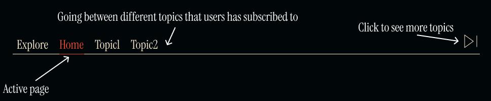

Behaviour Design
Behavioural design focuses on understanding user behavior and using design elements to nudge users towards specific actions
Desktop:

This demonstrates how menu button states—specifically the active page state and hover state—are visually distinguished in a desktop navigation menu. The “HOME” button shows the active state with a highlighted background and an arrow indicating selection, while the “TOPICS” button displays the hover state with a similar arrow appearing on mouseover. This visual feedback is crucial for accessibility and user experience, as it helps users understand their current location within the site and how to navigate it intuitively.
Mobile:

The mobile navigation menu with a clear indication of the active page. The “Home” button is highlighted in red with a solid icon and label, signaling to users which section they’re currently viewing. This matters because visual cues like color and emphasis enhance usability and accessibility, helping users stay oriented and confidently navigate the app or site from a mobile device.
Desktop No Hover:


A desktop site header that highlighting key interactive elements that support navigation and user engagement. The site logo on the left links back to the homepage, the central search bar enables users to discover new topics, and the right-side icons provide quick access to actions: creating a new post (on hover), opening the chat page, and visiting the profile page. These intuitive elements enhance usability by giving users clear, accessible pathways to major site functions
Mobile:

A mobile website header with labeled navigation elements, illustrating how intuitive icon placement and minimal text can guide users efficiently. It highlights key user actions—returning home, searching content, accessing chats, and visiting the profile—ensuring quick access to essential features. This matters because clear visual hierarchy and icon-based cues enhance usability, especially on small screens.
Desktop And Mobile:

A mobile carousel interface for browsing trending posts. It highlights core interactions: swiping or tapping arrows to navigate between cards, enlarging the active card for emphasis (1.5x scale), and clicking to open a post. This matters because it demonstrates how motion, scaling, and minimal text enhance content discovery and user engagement in a touch-friendly design.
Desktop And Mobile:

A horizontal topic navigation bar on a desktop interface, allowing users to switch between different content categories they’ve subscribed to. It emphasizes the active page with a color highlight and provides a button to access additional topics. This matters because it supports personalized content exploration while maintaining a clean, organized layout for improved usability and engagement.